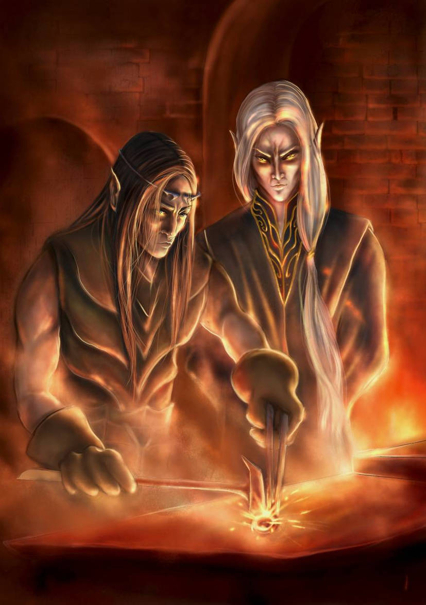

Rings of Power — What the Show Compresses
The Second Age bends around craft and deceit. Sauron appears as Annatar, "Lord of Gifts," to tutor Elven‑smiths. The Elves forge many rings; Sauron secretly forges the One Ring to rule them. When he dons it, the Elves perceive the trap and hide their Three. This period spans over 1,600 years in Tolkien's timeline, but the complexities of power, trust, and betrayal remain timeless themes that resonate across any adaptation.
The show definitely condenses timelines and merges roles. Here we highlight compressed elements — who taught whom, which realms coexisted, and why centuries become seasons on screen. Amazon's adaptation makes necessary changes for TV pacing, but understanding the original timeline really helps viewers appreciate the weight of decisions and relationships. The forging of the rings represents the height of Second Age craftsmanship, combining Elven artistry with some pretty dangerous ambition.
Use the list below as a spoiler‑aware guide; then check primary sources. The political and personal relationships in this era are complex, involving multiple kingdoms, guilds, and individuals whose choices echo through millennia. Understanding these connections enriches both the reading of Tolkien's work and the viewing of modern adaptations, as each creative team must decide which elements to emphasize and which to streamline for their medium.
Timeline Compression Examples
- Annatar's arrival to Eregion (originally spanning centuries)
- The forging period of the Rings (hundreds of years compressed)
- Númenor's rise and fall (condensed from millennia to seasons)
- The Last Alliance formation (originally decades of preparation)
Key Adaptational Changes
- Character composites and renamed roles for narrative efficiency
- Artifacts and places introduced out of book chronological order
- Geographical distances minimized for television travel logistics
- Political alliances simplified to focus on main character arcs
- Romantic subplots added to enhance emotional engagement
Image Credits
"Annatar and Celebrimbor" by Nicola Chibbaro. Creative Commons Attribution license. Original artwork used under fair use for educational purposes.